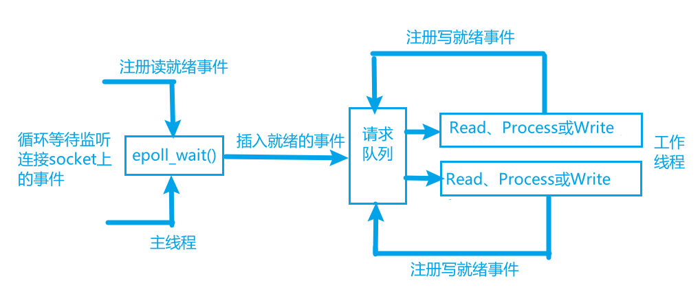
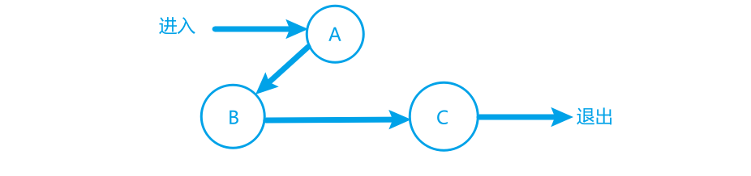

Linux高性能服务器三
本文最后更新于：a year ago
一、C/S模型的基本逻辑
C/S模型比较适合资源集中的场合。但是缺点就是当客户端过多的时候，可能响应得比较慢。
二、P2P模型
伴随的问题是，用户之间的请求过多时，网络负载加重；同时主机与主机之间很难相互发现。从本质上来说，P2P模型就是每台主机既可以当客户端又可以当服务端。所以我们可以选择C/S模型进行深入探讨。
三、服务器的基本框架
| 单元 | 功能 |
|---|---|
| I/O处理单元 | 服务器管理客户连接的模块。它通常要完成以下工作：等待并接受新的客户连接，接收客户数据，将服务器响应数据返回给客户端。 |
| 逻辑单元 | 通常是一个进程或线程。然后将结果传递给I/O处理单元或者直接发送给客户端。 |
| 网络存储单元 | 是数据库、缓存和文件，或是一台独立的服务器。它不是必须的，比如ssh、telnet等登录服务就不需要这个单元。 |
| 请求队列 | 是各单元之间的通信方式的抽象。 |
四、I/O模型
I/O模型在前面提到过。在这再强调一些概念。
阻塞I/O：阻塞的文件描述符。可能因为无法立即完成而被操作系统挂起，直到等待的事件发生为止。
非阻塞I/O：非阻塞的文件描述符。执行的系统调用则总是立即返回，而不管事件是否已经发生。
I/O复用：应用程序通过I/O复用函数向内核注册一组事件，内核通过I/O复用函数把其中就绪的事件通知给应用程序。I/O复用函数本身是阻塞的，它们能提高程序效率的原因在于它们具有同时监听多个I/O事件的能力。
SIGIO信号：当目标文件描述符上有事件发生时，SIGIO信号的信号处理函数将被触发。
异步I/O：当一个异步过程调用发出后，调用者不能立刻得到结果。
问：同步与异步有什么不同？
答：同步指的是用户进程触发IO操作并等待或者轮询的去查看IO操作是否就绪；异步是指用户进程触发IO操作以后便开始做自己的事情，而当IO操作已经完成的时候会得到IO完成的通知。
五、两种高效的事件处理模式
同步I/O模型通常用于实现Reactor模式，异步I/O模型则用于实现Proactor模式。
Reactor模式

使用同步I/O模型（以epoll_wait为例）实现的Reactor模式的工作流程是：
1）主线程往epoll内核事件表中注册socket上的读就绪事件。
2）主线程调用epoll_wait等待socket上有数据可读。
3）当socket上有数据可读时，epoll_wait通知主线程。主线程则将socket可读事件放入请求队列。
4）睡眠在请求队列上的某个工作线程被唤醒，它从socket读取数据，并处理客户请求，然后往epoll内核事件表中注册该socket上的写就绪事件。
5）主线程调用epoll_wait等待socket可写。
6）当socket可写时，epoll_wait通知主线程。主线程将socket可写事件放入请求队列。
7）睡眠在请求队列上的某个工作线程被唤醒，它往socket上写入服务器处理客户请求的结果。
Proactor模式
使用异步I/O模型（以aio_read和aio_write为例）实现的Proactor模式的工作流程是：
1）主线程调用aio_read函数向内核注册socket上的读完成事件，并告诉内核用户读缓冲区的位置，以及读操作完成时如何通知应用程序（这里以信号为例，详情请参考sigevent的man手册）。
2）主线程继续处理其他逻辑。 （重点！！！）
3）当socket上的数据被读入用户缓冲区后，内核将向应用程序发送一个信号，以通知应用程序数据已经可用。
4）应用程序预先定义好的信号处理函数选择一个工作线程来处理客户请求。工作线程处理完客户请求之后，调用aio_write函数向内核注册socket上的写完成事件，并告诉内核用户写缓冲区的位置，以及写操作完成时如何通知应用程序（仍然以信号为例）。
5）主线程继续处理其他逻辑。
6）当用户缓冲区的数据被写入socket之后，内核将向应用程序发送一个信号，以通知应用程序数据已经发送完毕。
7）应用程序预先定义好的信号处理函数选择一个工作线程来做善后处理，比如决定是否关闭socket。
Reactor和Proactor模式的主要区别就是真正的读取和写入操作是有谁来完成的，Reactor中需要应用程序自己读取或者写入数据，而Proactor模式中，应用程序不需要进行实际的读写过程，它只需要从缓存区读取或者写入即可，操作系统会读取缓存区或者写入缓存区到真正的IO设备.
模拟Proactor模式
1）主线程往epoll内核事件表中注册socket上的读就绪事件。
2）主线程调用epoll_wait等待socket上有数据可读。
3）当socket上有数据可读时，epoll_wait通知主线程。主线程从socket循环读取数据，直到没有更多数据可读，然后将读取到的数据封装成一个请求对象并插入请求队列。
4）睡眠在请求队列上的某个工作线程被唤醒，它获得请求对象并处理客户请求，然后往epoll内核事件表中注册socket上的写就绪事件。
5）主线程调用epoll_wait等待socket可写。
6）当socket可写时，epoll_wait通知主线程。主线程往socket上写入服务器处理客户请求的结果。
六、两种高效的并发模式
计算密集型：并发程序没有优势，任务的切换会使效率降低；
I/O密集型：并发会使得CPU效率提高
服务 器主要有两种并发编程模式：半同步/半异步（half-sync/half-async）模式和领导者/追随者（Leader/Followers）模式。
半同步/半异步模式
问：这里的“同步”与“异步”和之前提到的I/O的同步和异步是一个东西吗？
答：不是。在I/O模型中，“同步”和“异步”区分的是内核向应用程序通知的是何种I/O事件（是就绪事件还是完成事件），以及该由谁来完成I/O读写（是应用程序还是内核）。在并发模式中，“同步”指的是程序完全按照代码序列的顺序执行；“异步”指的是程序的执行需要由系统事件来驱动。常见的系统事件包括中断、信号等。
同步线程：按照同步方式运行的线程。执行效率低，实时性差。但逻辑简单。
异步线程：按照异步方式运行的线程。执行效率高，实时性强。但是较复杂，难于调试，不适合大量的并发。
服务器既要有较好的实时性，又要有较好的并发性。所以，使用半同步/半异步模式。
同步线程用于逻辑处理单元，异步线程用于I/O单元。
此外还有半同步/半异步模式的变体——半同步/半反应堆模式：
半同步/半反应堆模式存在如下缺点：
❑主线程和工作线程共享请求队列。主线程往请求队列中添加任务，或者工作线程从请求队列中取出任务，都需要对请求队列加锁保护，从而白白耗费CPU时间。
❑每个工作线程在同一时间只能处理一个客户请求。如果客户数量较多，而工作线程较少，则请求队列中将堆积很多任务对象，客户端的响应速度将越来越慢。
还有一种相对高效的半同步/半异步模式，它的每个工作线程都能同时处理多个客户连接：
领导者/追随者模式
先略过
七、有限状态机
有限状态机是应用于逻辑的单元内部的一种高效编程方法。
下面展示一个简单的带状态转移的状态机：
STATE_MACHINE()
{
State cur_State=type_A; //初始状态为A
while(cur_State!=type_C) //当状态为C时退出
{
Package_pack=getNewPackage();
switch(cur_State)
{
case type_A: //A状态变为B状态
process_package_state_A(_pack);
cur_State=type_B;
break;
case type_B: //B状态变为C状态
process_package_state_B(_pack);
cur_State=type_C;
break;
}
}
}
关于HTTP请求的读取和分析的代码可以看这边：HTTP状态机（太长啦，放不下）（捂脸.jpg，想起那个：“你现在已经学会了1+1了，下面来试试这个吧！”）
八、其他注意的点
池
池是一组资源的集合，这组资源在服务器启动之初就被完全创建好并初始化，这称为静态资源分配。池相当于服务器管理系统资源的应用层设施，它避免了服务器对内核的频繁访问。池可分为多种，常见的有内存池、进程池、线程池和连接池。
数据复制
高性能服务器应该避免不必要的数据复制，尤其是当数据复制发生在用户代码和内核之间的时候。
比如：ftp服务器，当客户请求一个文件时，服务器只需要检测目标文件是否存在，以及客户是否有读取它的权限，而绝对不会关心文件的具体内容。这样的话，ftp服务器就无须把目标文件的内容完整地读入到应用程序缓冲区中并调用send函数来发送，而是可以使用“零拷贝”函数sendfile来直接将其发送给客户端。
上下文切换和锁
上下文切换（context switch）的问题，即进程切换或线程切换导致的的系统开销。即使是I/O密集型的服务器，也不应该使用过多的工作线程（或工作进程，下同），否则线程间的切换将占用大量的CPU时间，服务器真正用于处理业务逻辑的CPU时间的比重就显得不足了。半同步/半异步模式是一种比较合理的解决方案，它允许一个线程同时处理多个客户连接。
另外一个问题是共享资源的加锁保护。锁通常被认为是导致服务器效率低下的一个因素，因为由它引入的代码不仅不处理任何业务逻辑，而且需要访问内核资源。两种想法：减少锁的使用；减小锁的粒度
参考资料
[1] 《Linux高性能服务器》游双
本博客所有文章除特别声明外，均采用 CC BY-SA 4.0 协议 ，转载请注明出处！